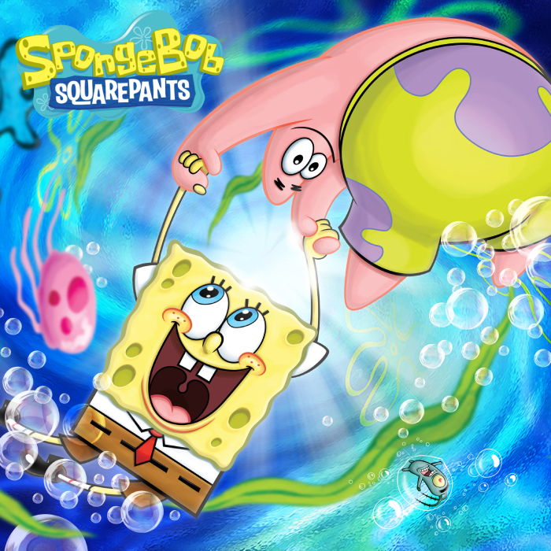
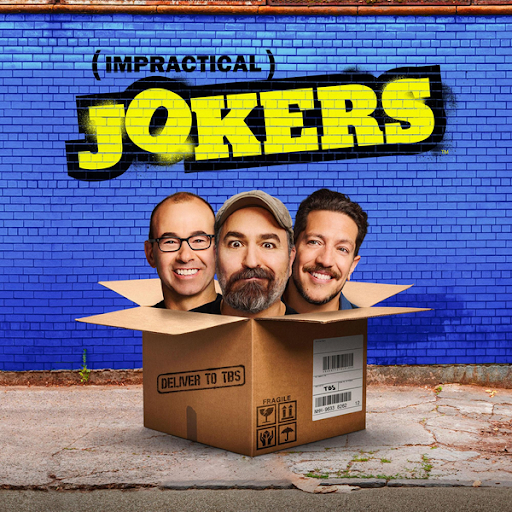

Smiling Friends (2022)9/10A funny cartoon that is always just random stuff going on, yet it's such a good show. I love the characters and plots of some episodes too.

Spongebob Squarepants (1999)8/10A really good kids show that has such a good vibe, especially during the earlier seasons. Can't really hate on the show it's just good.

Impractical Jokers (2011)8/10A really funny tv show wherew friends put each other into really funny situations. This is fun for a group of friends or family just to get a good laugh and i've loved it for so long.